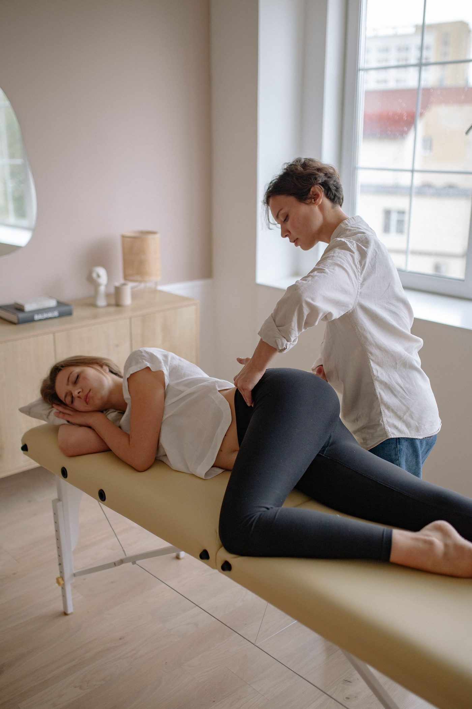

The clinic, in stock photos


Little Rock, Arkansas
Perfect Alignment Chiropractic has served Little Rock for more than 22 years. Dr. Eddie practices five adjusting techniques. Call or email to ask about relief, corrective, or wellness care.

Perfect Alignment Chiropractic is a chiropractic clinic in Little Rock, serving the community for more than 22 years. Dr. Eddie practices five adjusting techniques: Grostic upper cervical, diversified, Koren Specific Technique, Torque Release, and myofascial release. The clinic describes its care as relief care, corrective care, and wellness care. No prices and no booking form were published, so call or email to ask about an appointment.
205 N Van Buren St, Little Rock, AR 72205
Monday, Wednesday, Friday 8:30 AM to 12:30 PM and 2:30 PM to 5:30 PM; Tuesday 8:30 AM to 11:00 AM; Thursday 2:30 PM to 5:30 PM